Today is Sunday, the second rest day in Poznana.
In my original plan, I had planned to leave Poznana tomorrow.
However, the plan has changed, this city is worth to be walked around, I am in no hurry to leave.
Thus this has become one of the days I am in Poznana.
Poznana is a quiet city anyway, and on Sunday it is even quieter.
There is only the church bell heard on the street since everyone has gone to the Sunday church service.
In this city with lots of churches around,
I randomly picked a church near the old city to observe the Sunday service.
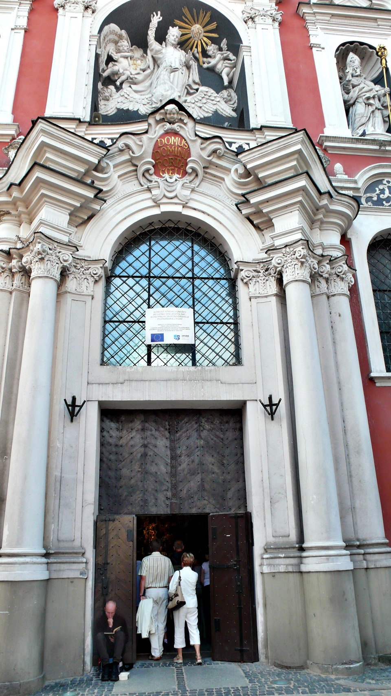
This church looks very simple outside, but it is breath taking beautiful inside.
The place is filled with people coming for the Sunday service, and all the seats are gone.
The people that are just entering will have to stand for the service.
There is a little boy dressed in black sitting on a stool by the front entrance reading a book.
His clothing are clean and elegant, it is hard to imagine he is actually a beggar.
The beggar in Poznana has high class. They stand quietly on the street side, and most are clean.
They look like they are waiting for someone; the only difference is he has a collection box next to him on the ground.
Some will ask you if you have any spare change? Any cigarettes?
If the answer is no, they won’t bother you, just smile and leave.
This is the first view after entering the church.
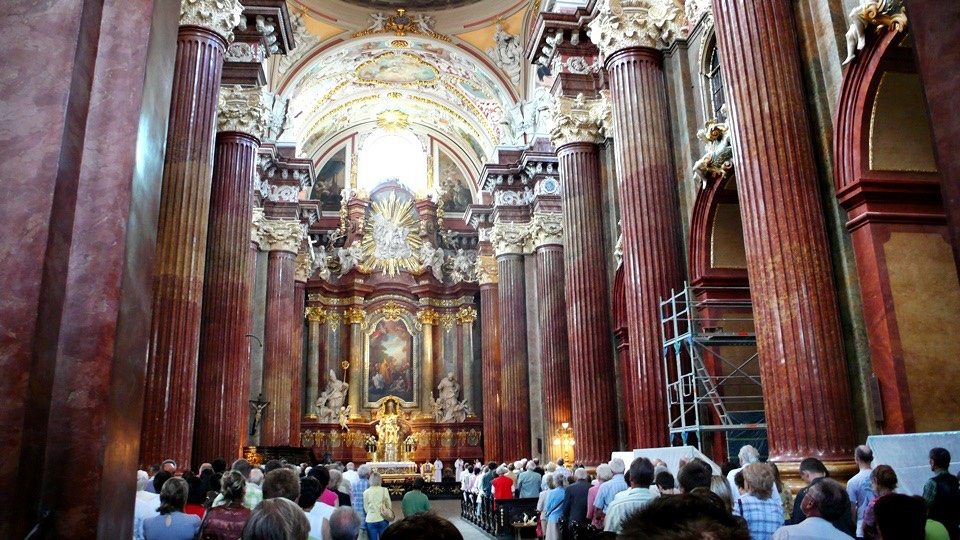
There are lots of religious people; the ceiling inside the church is at least 5 stories high.
The prayer from the priest and the elegant music mix together well.
Even though I am not religious, I can feel the respectful feeling.
This makes me feel I become a tiny person and this sermon language surpass any human power.
The painting on the ceiling is very pretty, and the design in the whole place is very exquisite.
This type of church is spread through out if the city, and lots of them are open 24 hours a day.
So when anyone needs to be comfortered, they can enter a church anytime.
It is fine taking pictures, as long as there is no flash. Don’t let one’s silly mistake become an international joke.
I am going to the flea market this morning.
Anywhere with cross walk there is this button you can push, after pressing a few seconds,
the light becomes green for people to walk across the street.
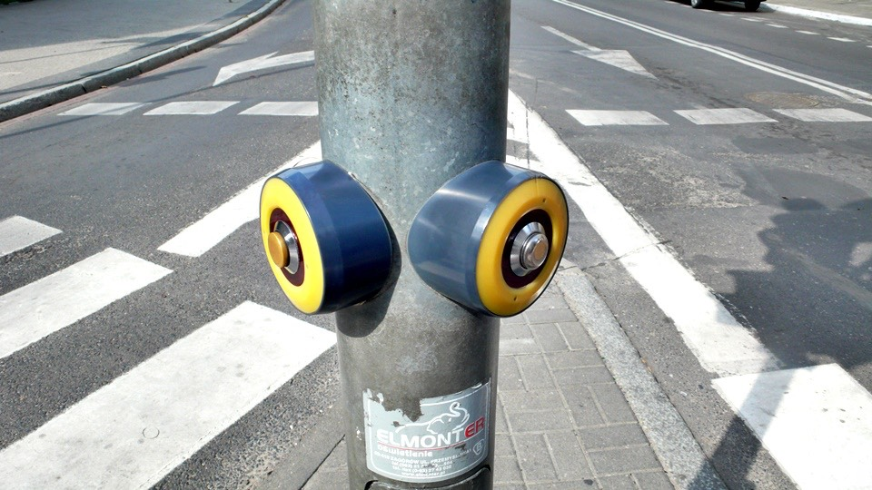
The trees on the street grown so big, they probably didn’t’ expect it would grow so big when they first planted it.
Therefore, the stone walkway rises from the tree’s roots.
In late August, it is already turning into autumn with leaves flying everywhere.
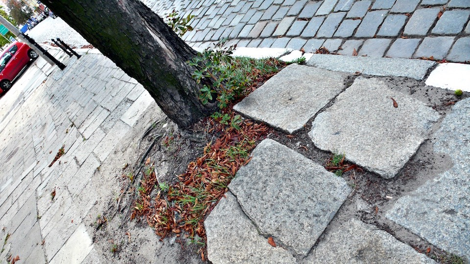
The location of the flea market is at the abandoned mill with the big chimney.
The flea market is only open on Sundays.
Today most of the stores are closed, so I came here to see another way of selling goods.
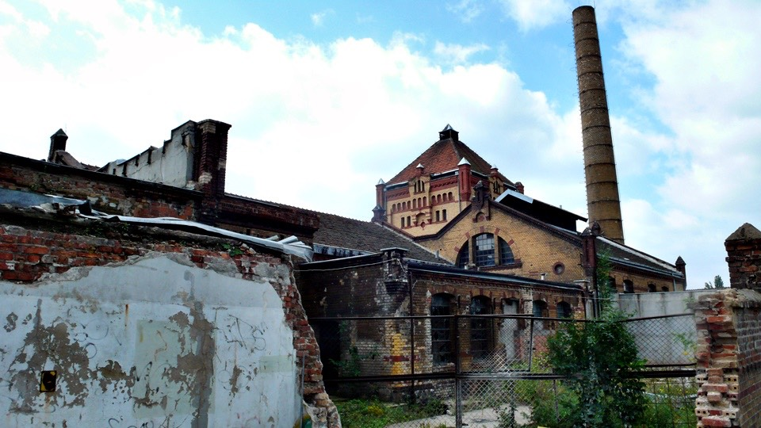
Walking around the outside wall of the abandoned mill, the place inside is filled with people visiting the flea market;
this place has everything strange available for sale.

The left side hanging with a yellow banner says flea market.
There is a biker parking his bike. Chances are, the bike will be gone in a few minutes.
The bike theft is very high in Poznana regardless if it is a cheap bike or if one that is locked.
As long as the bike is away from eyesight, the bike will be gone fast.
This is the first booth with items for sale as soon as I entered the flea market;
there are old clothing, painting, and some old frames on the table.
I can’t believe people will even sell this type of things.
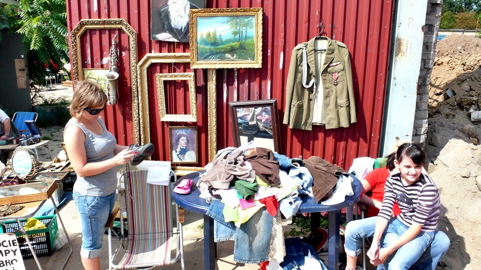
Actually, these items are decent quality since some of the booths are selling items that are close to trash quality,
and the price are extremely cheap. Rather than saying these are goods,
this is more like taking useless items from the dark corners of the home to sell,
putting everything under the sun and see who is willing to pay some money to take them home.
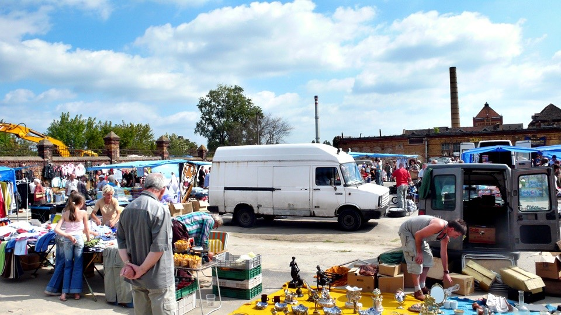
Before browsing I am getting some delicious food to feed myself.
There are very few food booths in the flea market; this BBQ booth is one of them.

There is gigantic sized sausage and extremely thick pork pieces to select from.
The pricing is cheap considering the amount you will be getting.
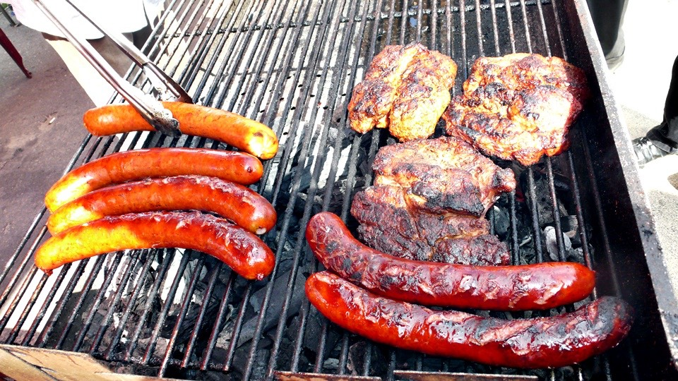
With the addition of ketchup and yellow mustard plus a huge piece of bread,
I will die happy as long as I can be here eating a huge piece of sausage and BBQ pork.
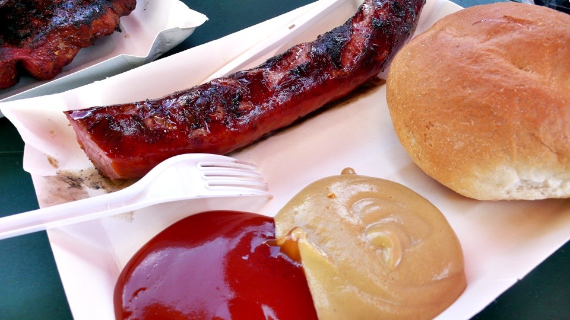
The flea market sells everything strange here,
after looking around for a while I feel there is nothing that can’t be sold here, nothing is weird here.
There are lots of items here; I will just use simple description below.
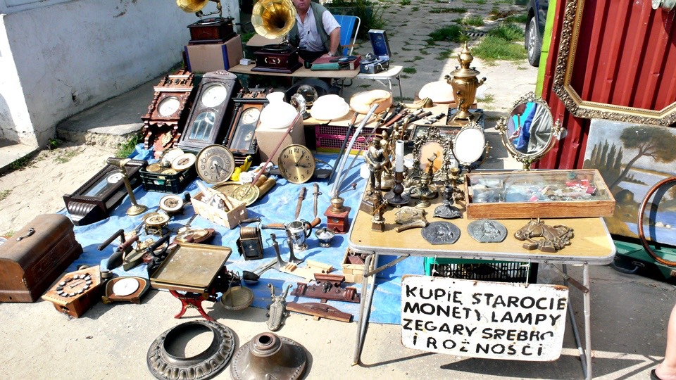
The metal items here are corroded; the silver items also are not shiny anymore.
As long as anyone is willing to pay and take some time to take care of the items,
things that don’t look like much will have a brand new look.
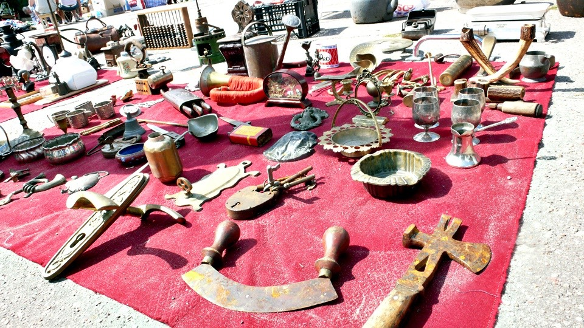
The item below is a corroded ax and a knife for cutting.
One can easily cut spices using this with some light pressure applied.
This open booth selling technology items is very advanced already;
there are ancient cell phones, CRT monitors, and the first generation Play Station. Oh the memories!
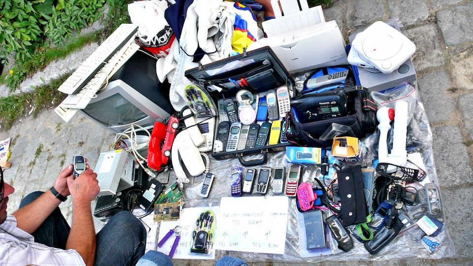
There is no price on any of the items at flea market, it all depends on what the seller tell you,
and then you can bargain with them. There is lots of room for bargaining.
Buying items here with bargaining is also a fun feeling.
Although Polish language is required.
In Warsaw, lots of young people can speak English,
and very well, but the older people in Poznana can only speak German,Russian, Spanish, and Polish.
English is the only language they are not able to understand.
This is the same for people flying into Poland.
At customs, the people who don’t speak Polish the immigration officer is more troublesome,
maybe not a little, but a lot troublesome.
I had originally thought since I was entering from Belarus into Poland
with my Taiwan passport the customs was being difficult to me.
However, I found out even people taking international flight doesn’t have an easy time either.
Even though everyone has exited already, but the immigration officers grill people from Taiwan.
It is very common here, the same at Russia, regardless if traveling by self or traveling with a group.
So many bikes, and the prices are very cheap, although the chances of getting stolen bikes are pretty high.
Guerilla already got 4 bikes stolen in Poznana.
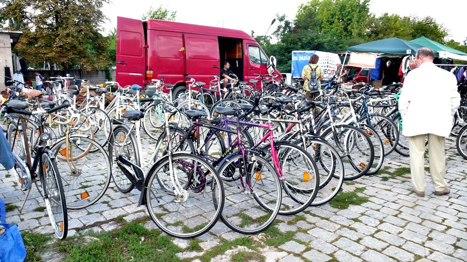
The very ancient rifle, guns, sword, they are all real items, although one will need to find bullets to fire the items.
These items are probably 50 years or older, they can easily be displayed at any museums.
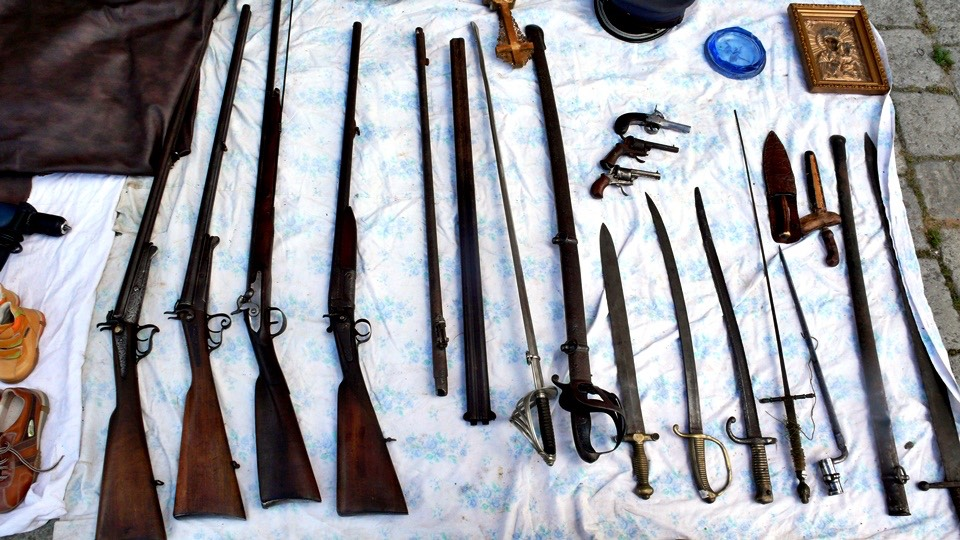
A very big duck toy placed in the middle of a cart at the flea market.
This looks like a lucky toy, if I have money I can buy it,
and the next time when I come to the flea market again the lucky toy will become another one.
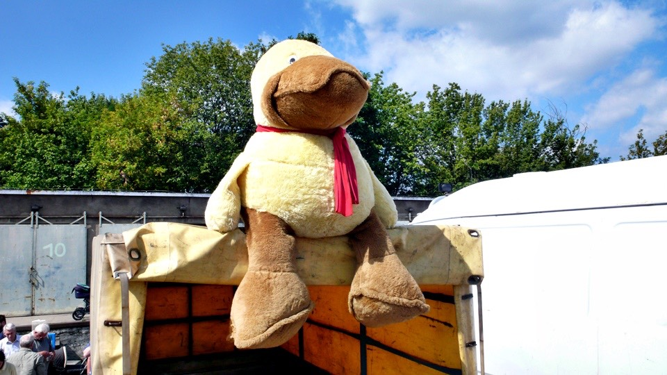
This is filled with people, complimented with a nice sunny day. This is the perfect activity after Sunday service.
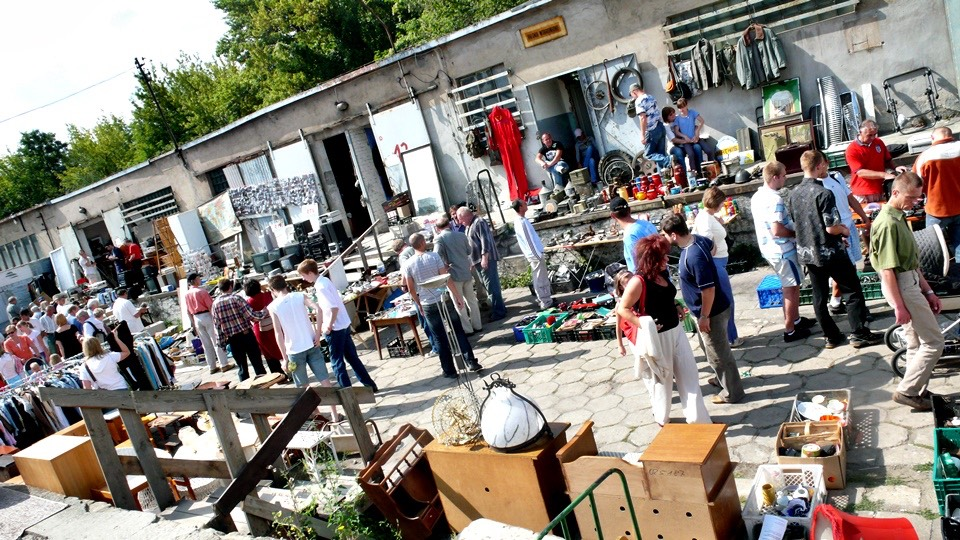
The mealtime here isn’t three times a day.
They start their breakfast at 8am, followed by 10am snack with the lunch at 3pm.
Finally, right before bedtime with dinner at 10pm.
There are four meals a day, and each meal is different.
Some are just cold bread, although the afternoon lunch meal is the most important meal for the day.
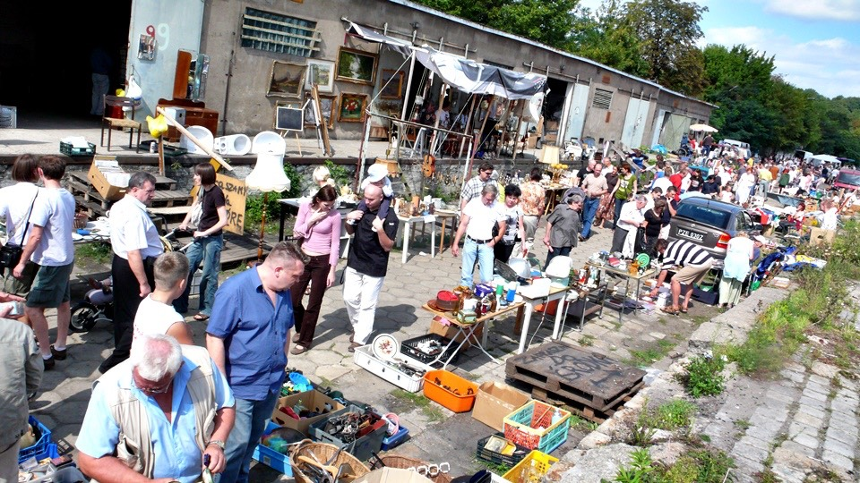
The booth selling shoes, this booth is nice in the way that they will put two shoes of the same next to each other.
The other booths all have shoes in a big pile. It would require luck to find two of the same shoes.
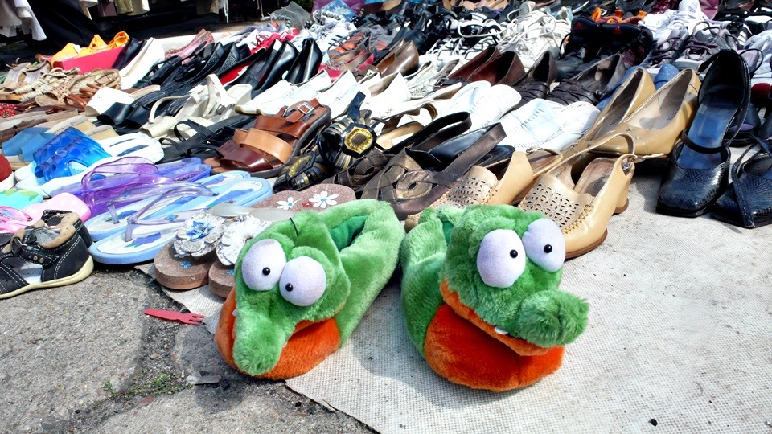
I was tempted to buy this alligator slipper, too bad my feet is so big,
I will continue to wear my blue and white slippers.
They even sell the blue bear cookie tin, everything on the table is $2Zit ($0.9USD) each, approximately $25NT.
There are no organization to what is placed on the table, it is similar to garage sale.
If there is organization to the goods, then it is more like second hand store.
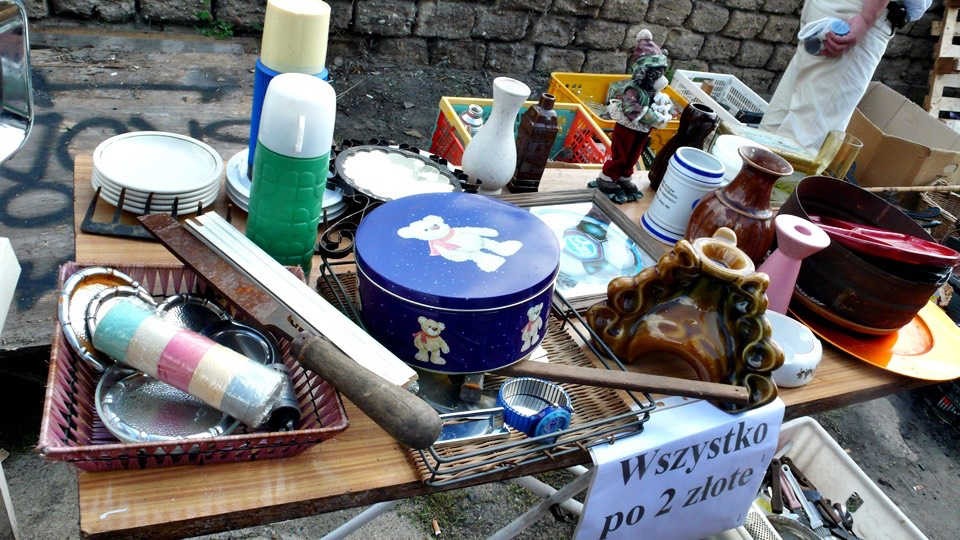
This booth is selling clothing, they are more elegant than some of other booth,
and they are displaying it hanging off a Fiat.
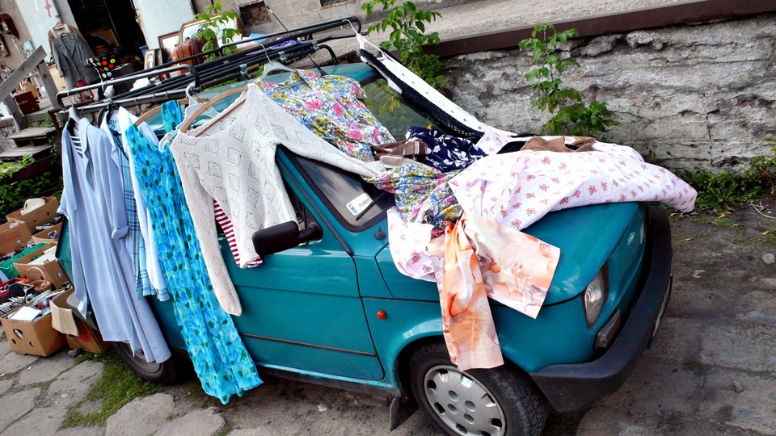
The guy of this booth asked me if I am willing to trade their ZENIT film camera for the LX2 digital camera I am holding.
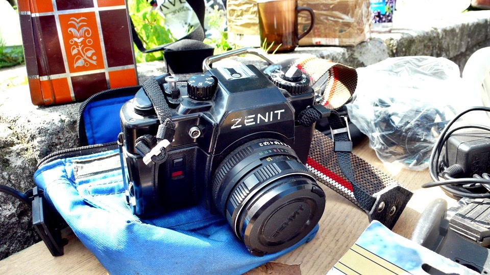
Trading one for one, I wouldn’t need to pay anything extra!
This sounds like a good trade; of course this means good business for the guy.
The ancient camera looks good, but I said no. The guy then kept adding to the trade.
It ended up being one huge video camera, a ZENIT film camera,
an ancient radio, plus a strange championship cup for the trade.
Polish people are very interesting, of course I still said no to the trade.
This is because I would need to buy lots of films for the rest of the trip photos.
Flea market style selling, some of the booth selling watches that are extremely cheap,
but the watch are all out of battery.
After purchasing the watch, one will need to purchase battery for it,
and the cost of the battery is more than the watch itself.
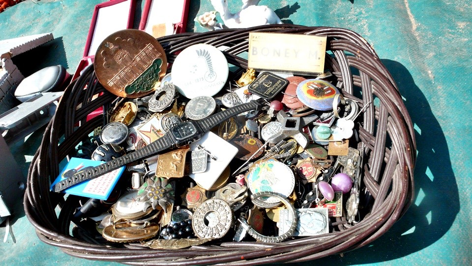
People with time in the morning can definitely get neat items for cheap price.
However, the things may not be useful, maybe one day wake up and wonder why did I buy all those things originally?
However, the feeling of finding treasure and browsing around in the middle of bargaining, is an amazing happy feeling.
Booth selling old books, comics, magazines, and CDs.
There are lots of bookstores in Poland. The number of bookstores in a town also reflects the literacy in that town.
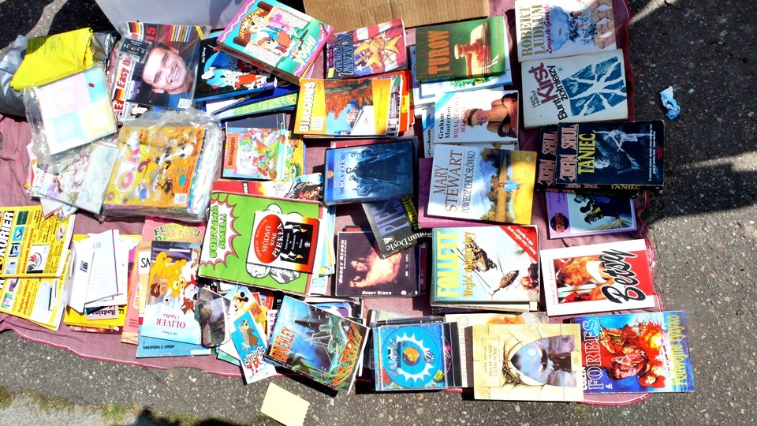
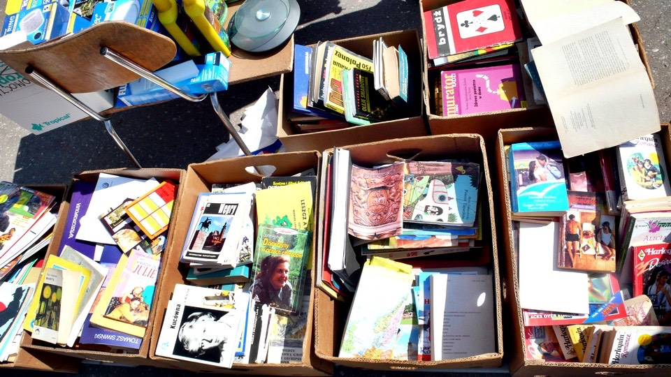
This looks like DVDs, they don’t look like second hand items, rather illegal copies.
After entering Europe there are more sexual content items available.
The other countries I had passed before are more conservative.
This is the same type of store next to the bus stop.
However, the items for sale in Poland are different from the ones in Russia.
The difference will be even greater as I travel west.
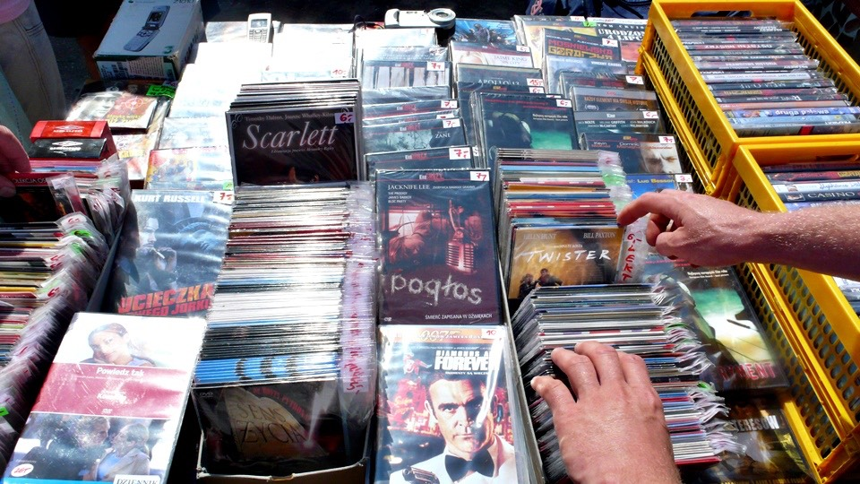
Store selling mirrors, I am really a vampire, that is why the mirror doesn’t show me! Sneeze! I am cold!

The very ancient radios.
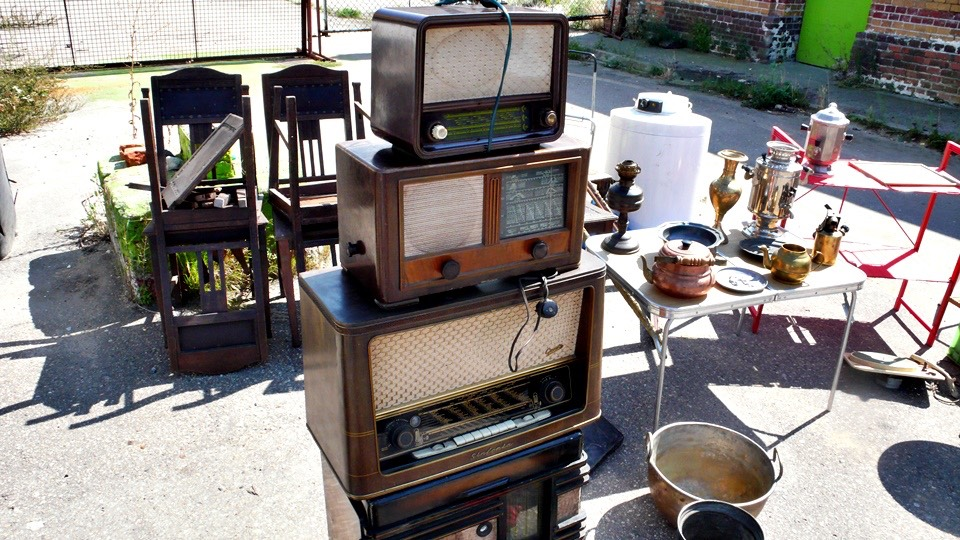
By selecting one with good condition, then resell it to someone who understands who this is will bring lots of money.
Because this is vacuum tube type radio, the size is big.
Once the radios are made of electronic chips, they become smaller.
The age of those radios should be more than 100 years old.
Some booth will sell tea, coffee, or canned goods.
Those types of things are dangerous, even more dangerous than ancient rifle.
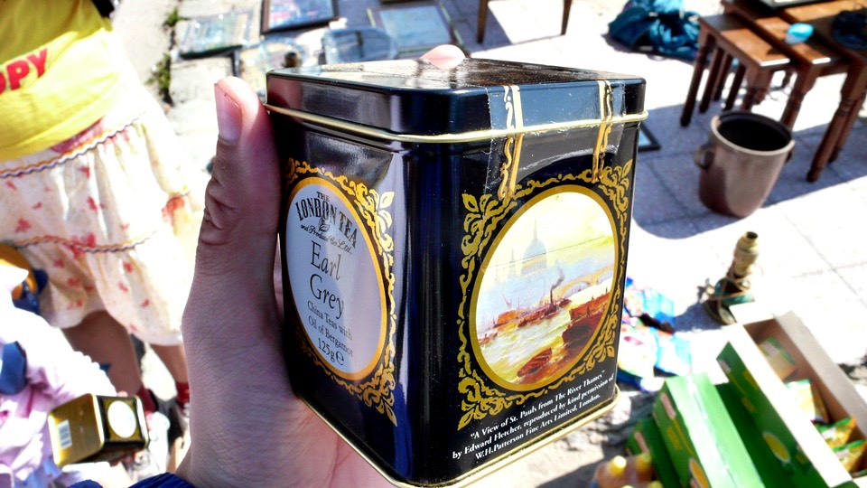
The exterior looks perfect and pretty. But flipping to the bottom, the expiration date has already been scratched off.
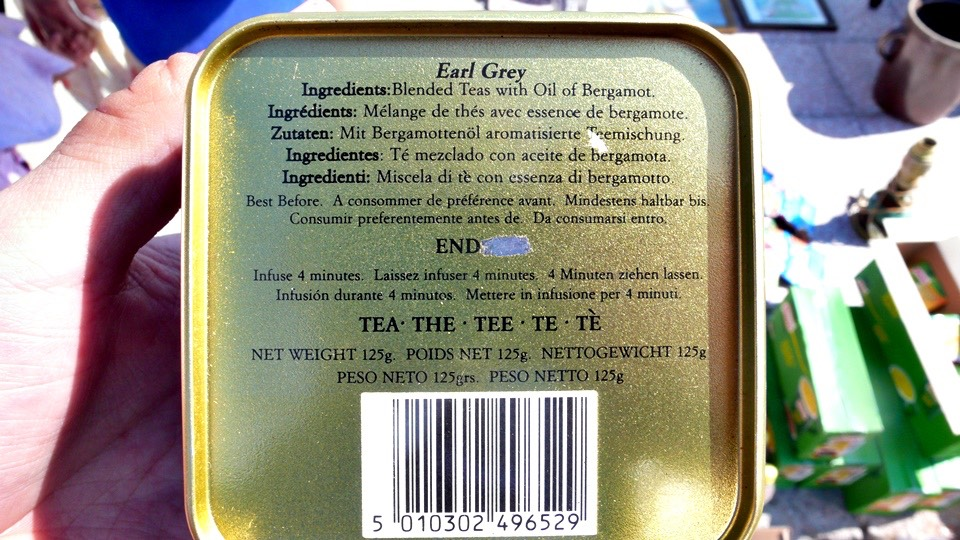
Continue selling things that are not sure how long this has expired; I suggest just purchasing this for collection.
If someone you don’t like visits you, then you can make him a cup of this tea.
Traditional disc, the product is in pristine condition, not much different to new items.
However, purchasing this type of item will also require machine that will play them.
Or buying this type of item will just for collection.
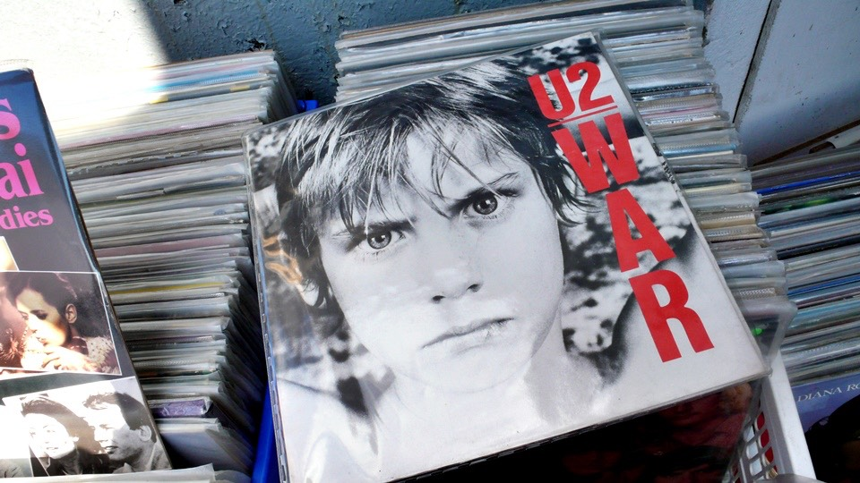
This is U2’s music and the cover is pretty.
One can find ancient musical and music goods, no wondering what you like you can find things you want at the flea market.
There are too many interesting items here.
If I talk about everything I will never stop.
This type of market is available everywhere including Taiwan.
I encourage you to go and discover what you can find.